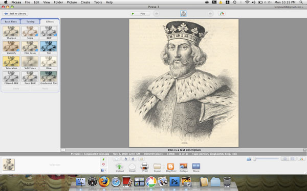

Picasa For The Mac Finally Available
I just read over on Techcrunch that Picasa for the Mac is finally ready. You can get it at http://picasa.google.com/mac/. I wrote about the rumors of Picasa on the Mac 10 days short of a year ago. The Mac version is nearly identical to it’s PC counterpart, interface and all. Check out the overview video embedded below.
One of the main reasons I like Picasa over iPhoto, the free photo program that comes with every new Mac, is Picasa keeps your folders in tact not forcing you to keep your library in a specific hierarchy. Plus, I find Picasa more intuitive and easy to use.

Now I just need to figure out how to sync my photo library and information between my Mac and PC instances of Picasa.
If you haven’t tried Picasa yet, give it a whirl .It really is a great way to organize and edit photos.

Still not available for Ubuntu Chrome – but available via Wine
Reply